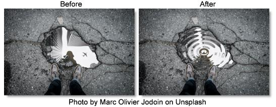

S_WarpPuddle
Description
Warps the image using a pattern of concentric waves.
The S_WarpPuddle filter comes from the Emmy award winning Boris FX Sapphire filter set.
Category
Lens/Distort.
Controls
Presets
To select a preset, pick one from the Presets window.
Amplitude
The amount of distortion.
Frequency
The frequency of the waves. Increase for more waves or decrease for fewer.
Rel Height
The relative height of the concentric wave pattern.
Rotate Puddle
Rotates the puddle pattern by this many counter−clockwise degrees after the Rel Height stretching has been applied. This has no effect when Rel Height is 1.
Center X & Y
The center of the puddle.
Phase Start
The phase shift of the waves.
Inner Radius
The distance from the puddle center where the wave distortion is phased in. No waves are generated inside this radius.
Inner Softness
The width of the region at the Inner Radius over which the wave distortion is phased in.
Outer Radius
The distance from the puddle center where the wave distortion is phased out. No waves are generated outside this radius.
Outer Softness
The width of the region at the Outer Radius over which the wave distortion is phased out.
Z Dist
Scales the distance of the image. Values greater than 1 move it farther away and make it smaller. Values less than 1 move the image closer and enlarge it. Zooming in slightly can sometimes be used to hide edge artifacts.
Wrap X & Y
Determines the method for accessing outside the borders of the image.
No
Renders black beyond the borders.
Tile
Repeats a copy of the image.
Reflect
Repeats a mirrored copy. Edges are often less visible with this method.
Filter
If enabled, the image is adaptively filtered when it is resampled. This gives a better quality result when parts of the image are warped smaller.
Crop Input
These 4 parameters, Crop Top, Crop Bottom, Crop Left, and Crop Right, allow selecting a rectangular subsection of the image to be processed. If the Wrap parameters are set to No, the exposed borders will be transparent. If the Wrap is Tile or Reflect, the image is wrapped on the new cropped borders to fill the frame. This can make it easier to avoid artifacts due to distorting an image with bad edges.
Show Frequency
Enables/disables the on-screen control for adjusting the Frequency parameter.
Show Inner Radius
Enables/disables the on-screen control for adjusting the Inner Radius. The value of the Inner Radius parameter must first be positive for this on-screen control to be visible.
Show Outer Radius
Enables/disables the on-screen control for adjusting the Rel Height parameter.
Show Center
Enables/disables the on-screen control for adjusting the Center parameter.
Show Rotate Puddle
Enables/disables the on-screen control for adjusting the Rotate Puddle parameter.